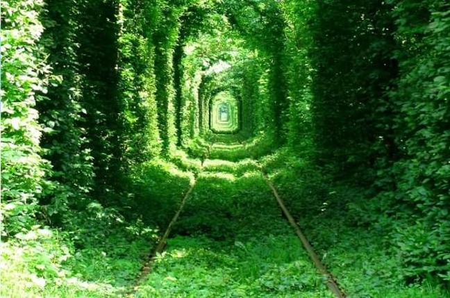
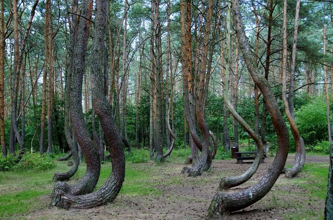

Начало
Тунелът на любовта(Украйна)
Каньона на антилопата(САЩ)

Тунелът на любовта(Украйна)

Кривата гора
(Полша)
„Тунела на любовта“ се намира между Клеван и село Оржев по линията Ковел-Ровно, на разстояние от седем километра. Близо до Оржев линията се разделя на две. Едната води до Клеван, а другата до тайна военна база от ерата на Студената война, скрита в гората. В онези дни дърветата са умишлено засадени по протежение на линията, за да прикрият транспортирането на военно оборудване. Военната база вероятно е все още в употреба, защото Google Maps показва голям брой военни превозни средства на базата.
Къде е „ Тунела на любовта ” в Украйна? Наистина ли има такова място, за което се твърди, че изпълнява желания? Мястото доста нашумя през последните години, появиха се много снимки и истории за влюбени, които там се вричат във вечна вярност и любов. Тайнственият зелен тунел от дървета, покриващ част от железопътна линия в Украйна е известен като “ Тунела на любовта „.
Полезни източници:
www.peika.bg
www.w3schools.com
Google.com
Изготвил:
Беркджан Хълми